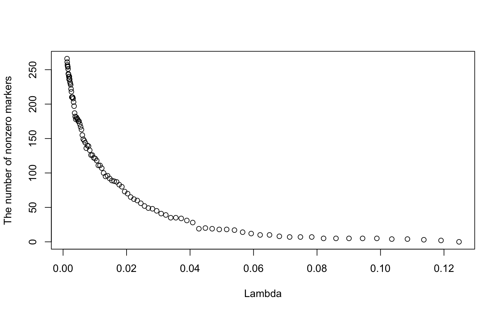

APSC 5984 Complex Trait Genomics
Homework assignment 3
Due date
Monday, March 30, 5pm
Wheat data
We will analyze the wheat data from Pérez-Rodríguez et al., (2012). (doi:10.1534/g3.112.003665). Download the supporting data File S1. The R object YLD_1.RData includes 306 elite wheat lines genotyped with 1,717 diversity array technology (DArT) markers. Note that the DArT marker is coded either 0 or 1 indicating the presence or absence of allele at a given locus. The marker information is in the Marker variable.
rm(list = ls())
load("data_G3/YLD/YLD_1.RData")
ls()[1] "A" "Markers" "Markers_w" "weights" "y" "y_w" W <- Markers
dim(W)[1] 306 1717Question 1
Read Whittaker et al. (2000) and summmarize the paper in 300 - 500 words.
Question 2
Recall that ridge estimates can be expressed as \(\hat{\beta}^{ridge}_j = \frac{\sum^n_{i=1} w^2_{ij} }{\sum^n_{i=1} w^2_{ij} + \lambda} \times \hat{\beta}^{ols}_{j}\). Create a centered genotype matrix Wc. Calculate the minor allele frequencies (MAF) and the amounts of shrinkage for all markers. Plot MAF on the X axis and the amounts of shrinkage on the Y axis. Interpret the figure you obtained. Use \(\lambda = 100\). Use the genotype matrix Wc.
Question 3
Fit a ridge regression using the glmnet R package. Create a scatterplot of marker effects when \(\lambda = 10\) (y-axix) and \(\lambda = 0.1\) (x-axis). Interpret the role of \(\lambda\) in the ridge regression. Use the variables y and W.
Question 4
Contrary to the ridge regression, the LASSO shrinks marker effects exactly equal to zero. Therefore, the LASSO can be used as a subset selection method.
aL <- glmnet(W, y, alpha = 1)
plot(aL$lambda, aL$df, ylab = "The number of nonzero markers", xlab = "Lambda")
This figure shows the relationship between the sequence of \(\lambda\) values and the number of nonzero markers. Interpret the figure in the context of GWAS.